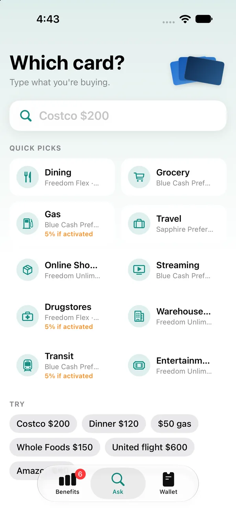

财务
选卡
刷哪张卡？
问一下就知道。
选卡告诉你，眼前这笔消费用哪张信用卡回报最高。输入“Costco $200”或“Dinner $120”，马上看到该刷哪张卡、能拿多少、为什么——全部在你的 iPhone 上算好。不需要卡号，不需要网银登录，也不用注册账号。
即将上线
隐私


功能亮点
专注一件事，
把它做好。

01问一问
输入你要买什么。
从消费出发，而不是从卡出发。“问一问”页直接输入文字——商家、金额，或者两者都写；常用类别的最佳用卡，在你输入之前就已经列好。
- “Costco $200”、“Dinner $120”、“$50 gas”——在 iPhone 上直接识别
- 餐饮、超市、加油、旅行、流媒体等快捷类别
- 拿不准你的意思时，会给出类别选项，而不是瞎猜
- 季度轮换奖励在你确认激活前，显示为“激活后 5%”
02推荐结果
一个明确的答案。
搜索“Uber”，选卡会告诉你该用哪张卡、能拿多少、为什么——再把钱包里每张卡按这笔消费排名，其他卡差多少一目了然。
- 最佳用卡和回报率，放在最显眼的位置
- 用大白话说明原因——“交通出行：出租车、网约车、停车……返 3%”
- 积分和里程默认按积分显示，除非你自己设定价值
- 你添加的优惠会叠加在这张卡的常规回报之上
03权益
所有权益，一目了然。
“权益”页把条款细则变成一张看板：你有几张卡、覆盖多少奖励类别，以及本季度的 5% 什么时候结束。
- 每个类别的最佳用卡，并列显示“激活后”的额外回报
- 卡片轮播，滑动查看每张卡的主要回报
- 角标提示还有几项奖励等待激活
- 消费上限如实标出，绝不猜测
04钱包
只记卡片产品，不碰卡号。
按产品名称添加你持有的卡。选卡从不索取卡号、登录或账户权限，保存的一切都只在你的 iPhone 上。
- 收录 Chase、Amex、Discover、Capital One、Citi、Wells Fargo 的美国常见信用卡
- 添加发卡行 App 里的优惠——比如 Nike 返 10%
- 刷新只读取发卡行公开的奖励日历，而且只在你点击时
- 没有账号、没有统计分析、不调用 AI 服务
详细信息
- 类别
- 财务
- 系统要求
- iOS 17 或更高版本。收录美国常见信用卡。
- 开发者
- 4M Studio
- 网站语言
- English · 中文
4M Studio 的更多应用